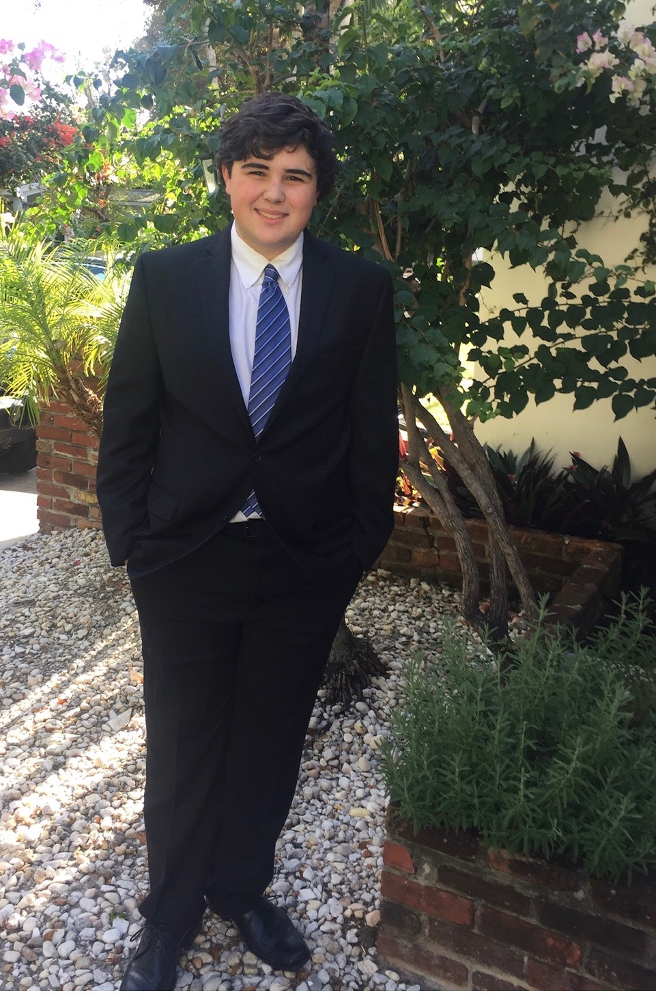

Andrew Granja 1320 S Dixie Hwy, Coral Gables, FL 33146
123-456-7890
ag1234@gmail.com
Education
University of Miami
:
Coral Gables, FL
Bachelors of Business Administration: Expected 2023
Christopher Columbus High School
:
Miami, FL
High School Diploma: May 2019
University of Miami GPA
High School GPA
N/A
3.45/4.0

About Me
My name is Andrew Granja. I was born in Miami FL and have spent most of my life living in Miami. My family was originally from Cuba, but moved to Miami during the late 1950s. All my grandparents were born in Cuba and so was my father. I got my high school education from Christopher Columbus High School in Miami and was part of the school's honor program. I am currently enrolled at the University of Miami studying to get a Bachelors of Business Administration. I am also minoring in game design at the university.
Work Experience
Oppenheimer & Co. Inc.
Miami FL
Assistant to Financial Advisor
June 2017-July 2017
Listened and sat in on meetings between Financial Advisor and clients which discussed buying and selling stocks, what companies the client should invest in, and discussed the importance of other financial methods to gain profit most importantly the practice of a short.
Wrote stock tickets displaying stock information, including number of shares purchase, purchase price, which company’s stock, and company stock ID on the New York Stock Exchange.
Researched multiple equities using bloomberg machine and prepared reports based on information found.
Oppenheimer & Co. Inc.
Liga Contra el Cancer Columbus Branch
Miami FL
President
May 2018-May 2019
Organized multiple fundraisers ,raised thousands of dollars. Funds donated to cancer patients in need through the Liga Contra el Cancer. Worked with and reached out to companies outside the league such as the Children’s Cancer Fund where club members raise money or directly help cancer patients through entertainment for children patients through games and events, or through direct service such as serving as waiters at the league’s annual fashion show.
Recruited over 15 students through a club fair, flyers around the school, and through personal recruiting.
La Liga Contra El Cancer
Skills, Activities, and Interests
Technical Skills:
MS Excel, Adobe XD
Activities:
Video Games Club Member, Participant at Children's Cancer Fund every December
Interests:
Video Games, Movies, Comics, Animation